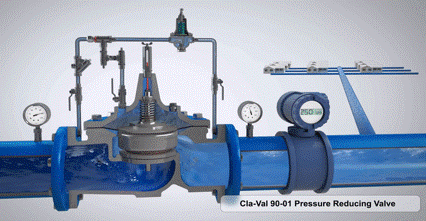

Hydraulics

Elastic Water Column Model (EWCM) Analysis of Water Distribution Systems
Transient analysis
Water Distribution modelling
Pressure Reducing valve and Pump
Developed and applied a physics‑based EWCM that captures water compressibility and pipe elasticity. Benchmarked against MOC and RWCM, quantified stiffness, and highlighted the control‑friendly state‑space form.